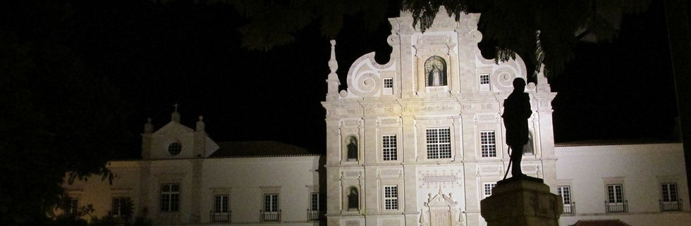

A ArqueoScallabis é uma empresa no ramo da Arqueologia, salvaguarda e gestão patrimonial, que nasceu da vontade de um grupo de profissionais, todos formados em Arqueologia e História pela Faculdade de Letras de Lisboa, e com um percurso consolidado na área, através dos mais diversos trabalhos, em vários pontos do País. Sediada na secular cidade de Santarém, a ArqueoScallabis está estruturada de forma a dar resposta ao mais variados projectos no âmbito da minimização de impactes sobre o património, seja através da reabilitação urbana, obras públicas, estudos de impacte ambiental, ou qualquer outro projecto que necessite da componente arqueológica para ser concluído com sucesso.
A nossa missão é contribuir de forma inovadora e positiva para os projectos dos nossos clientes, com serviços realizados de acordo com as normas de qualidade e excelência que prezamos dentro da nossa Empresa.
Caracterizamo-nos pelo gosto e respeito pelo Património Histórico, Arqueológico e Natural, assim como pelo seu papel na nossa herança e identidade cultural. Ao mesmo tempo valorizamos uma relação transparente e em parceria estreita com os nossos clientes, oferecendo soluções de qualidade adaptadas aos seus projectos.
A ArqueoScallabis é composta por uma equipa multidisciplinar, jovem e dinâmica, com elevados padrões éticos e profissionais, com experiência nas áreas da Arqueologia, Museologia e Serviços Educativos.
Estudos de Impacte Ambiental;
Prospecção arqueológica;
Acompanhamento arqueológico;
Escavação arqueológica;
Elaboração de Cartas arqueológicas;
Musealização de espaços;
Serviços Educativos;
Morada: CIES - Centro de Inovação Empresarial de Santarém, Largo Infante Santo. 2005-246 Santarém
*De momento, qualquer assunto a tratar em Sede de Empresa está sujeito a marcação prévia.
Telemóvel: 927710788 /918506990
E-mail: tp.siballacsoeuqra@lareg